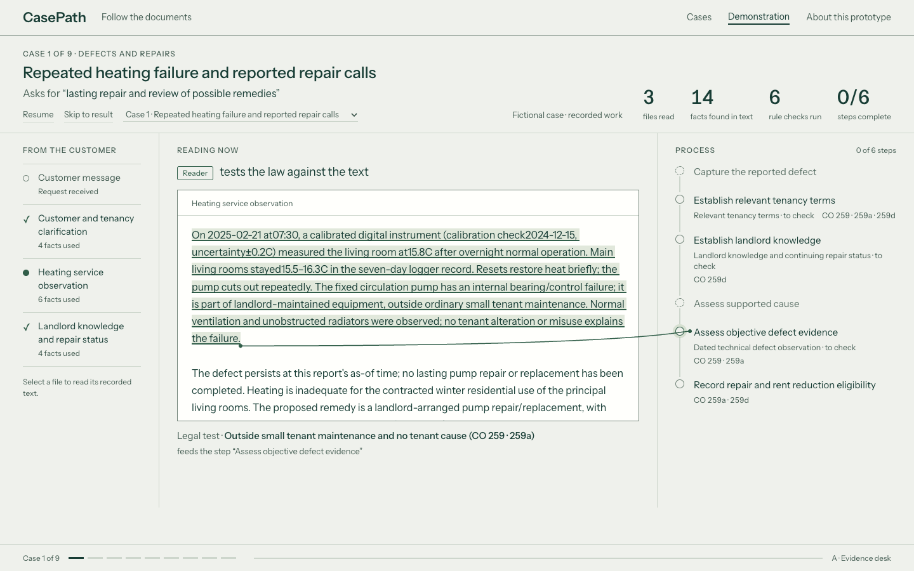
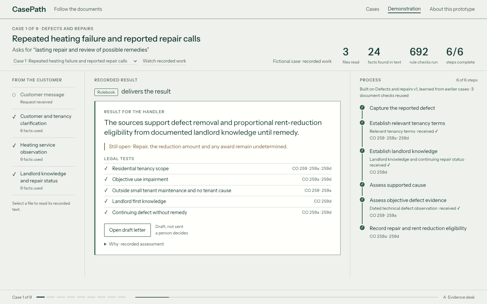
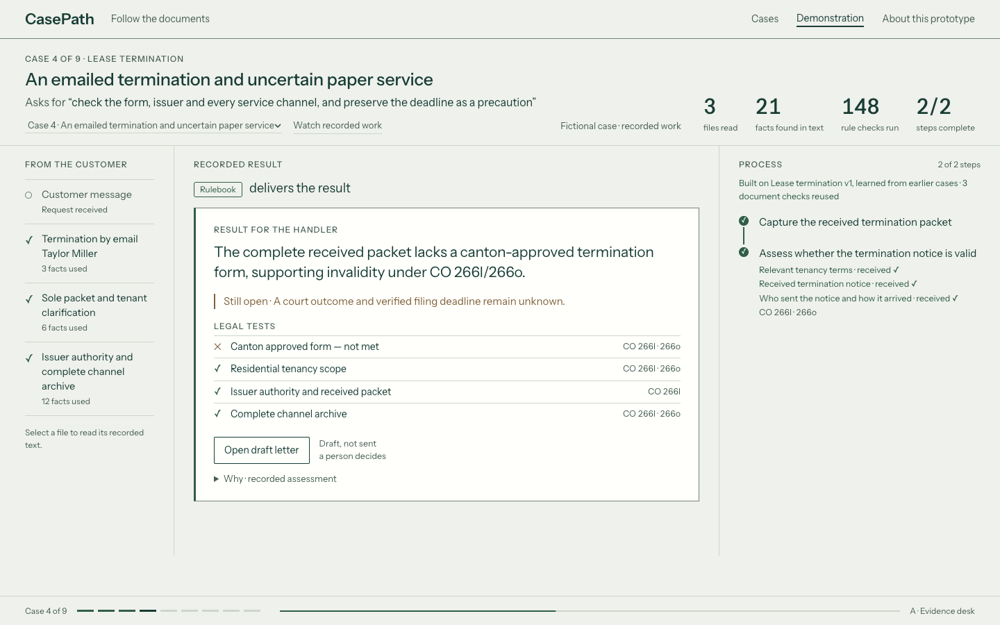
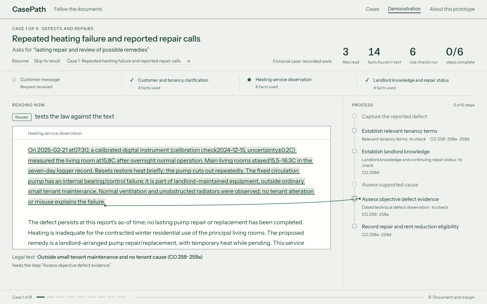
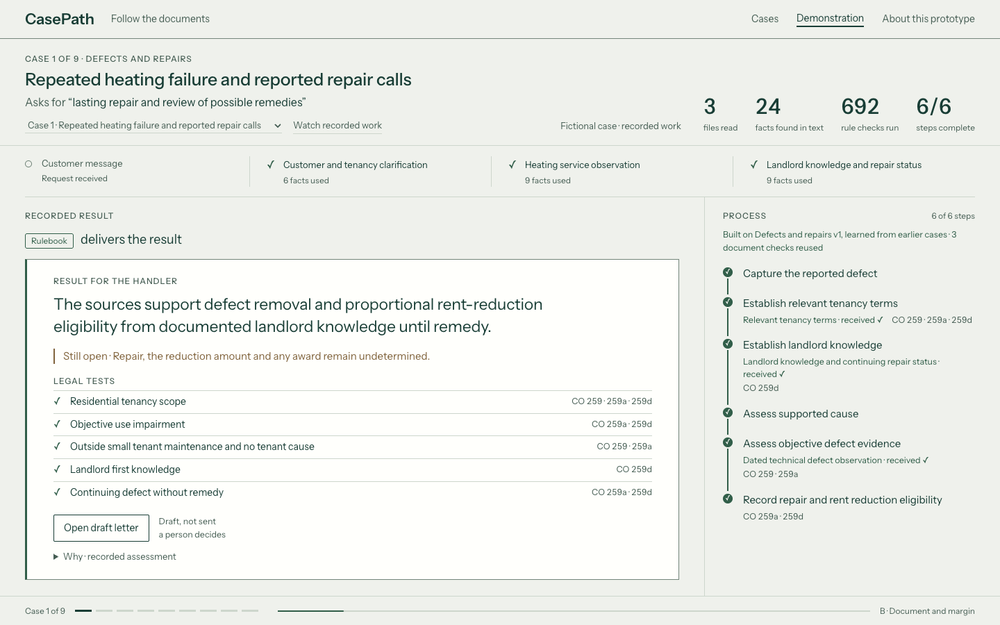
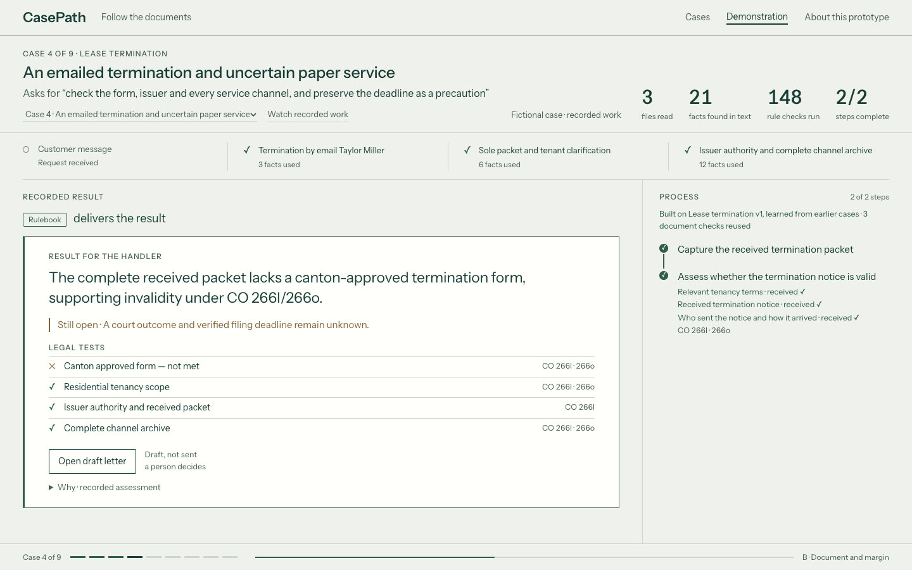
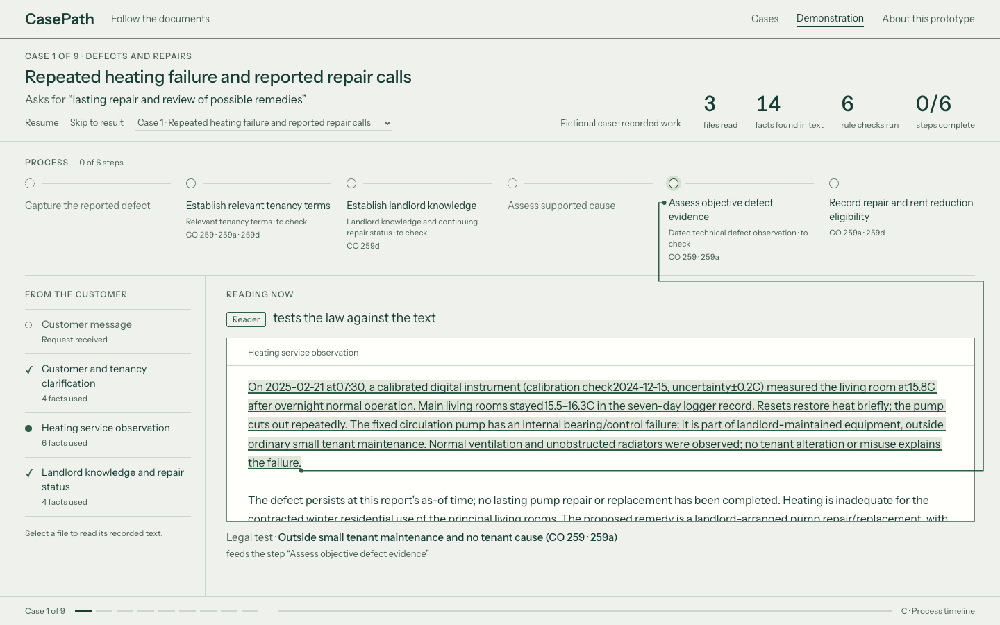
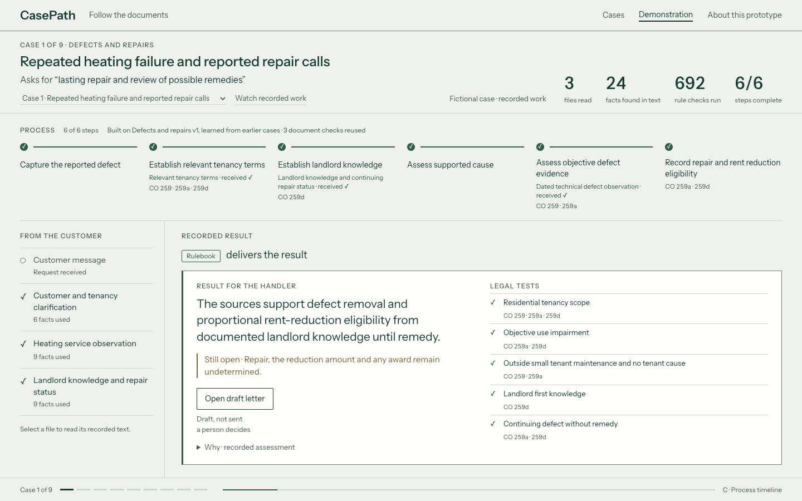
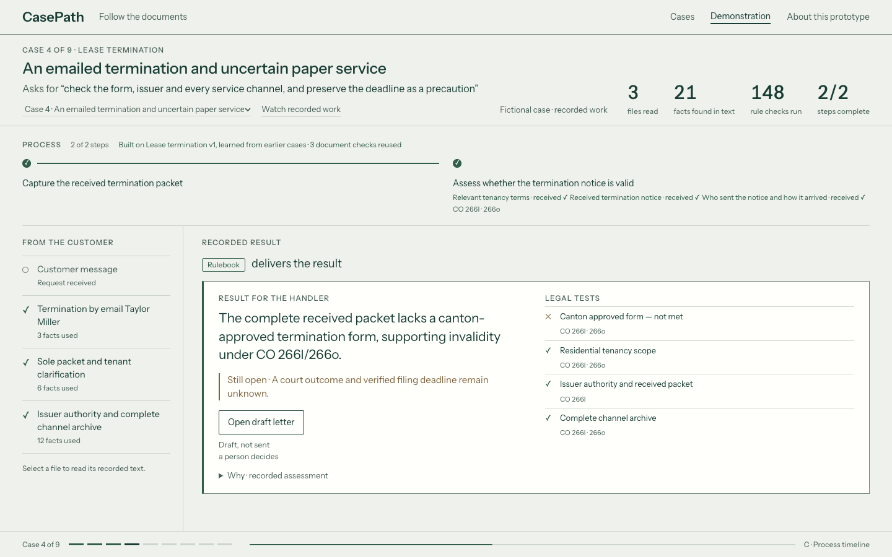

A · Evidence desk
Keep sources, reading and process together.
Play · Completed case · Failed legal test



Choose a direction before product implementation. Each option uses the same recorded cases at 1440 × 900.
Keep sources, reading and process together.
Play · Completed case · Failed legal test



Make the source document the main workspace.
Play · Completed case · Failed legal test



Show the whole process across the top.
Play · Completed case · Failed legal test


